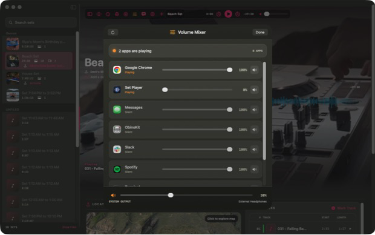
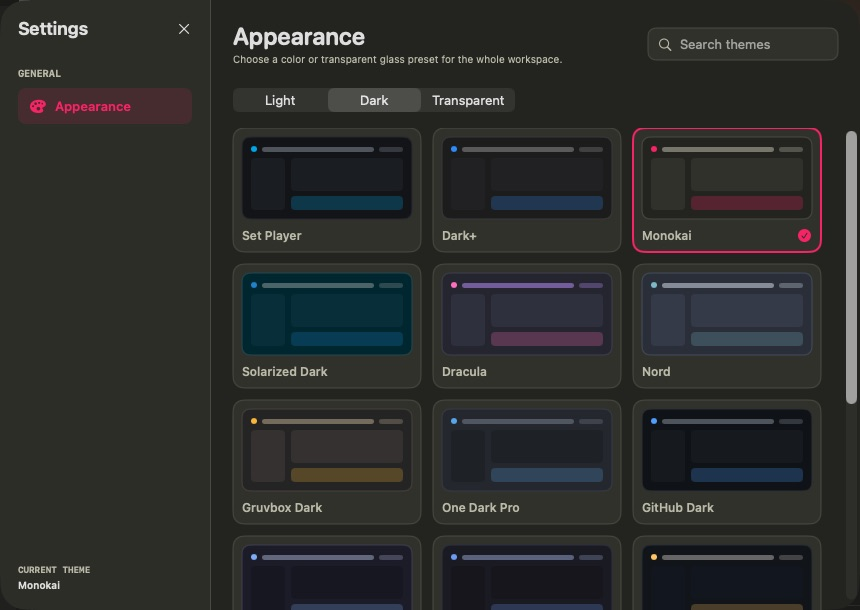

Berkeley & the Bay Area
A good set should feel inevitable.
House, pop, hip-hop, and familiar vocals—sequenced for the room, not just the playlist.

Bookings
Campus events, parties & private events
Contact
dils@berkeley.edu
↗
01 / Set Player
Made by Alex
Remember your DJ sets.
Set Player connects Rekordbox history to the recording—timed tracks, live lyrics, session context, and iPhone sync.
Explore Set Player



02 / Curated playlists
Current rotation
summer set
A seven-hour arc from melodic house into pop, hip-hop, and peak-hour throwbacks.
109tracks
7:01runtime
—Rekordbox synced
A / Bin & out cues
#
Track
BPM / Key
A In
B Out
No tracks match that search.
Cue times are read from Alex’s local Rekordbox Hot Cue A and B markers. A dash means that cue has not been set for that track.
Also in the crates
Classical House
Jazzy House
Bounce
Bollywood
Beach Set